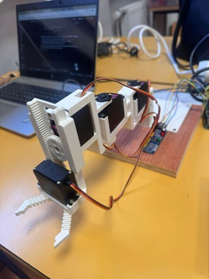
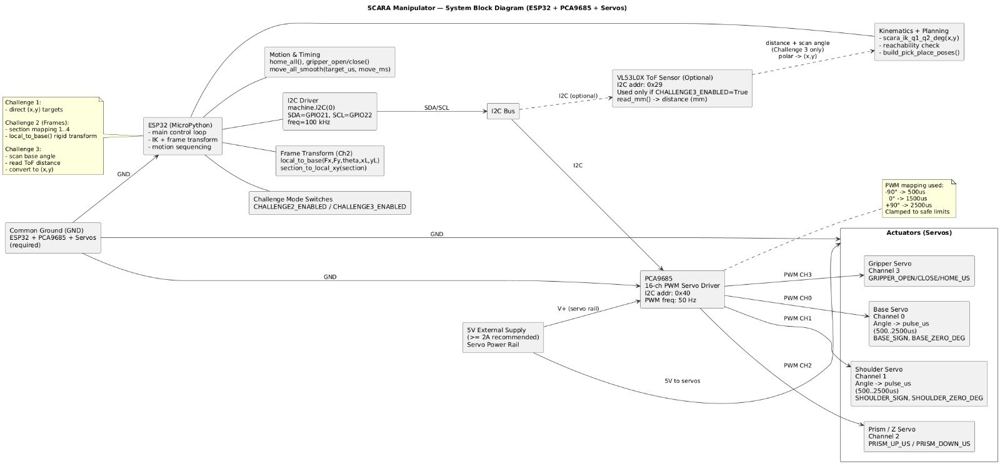
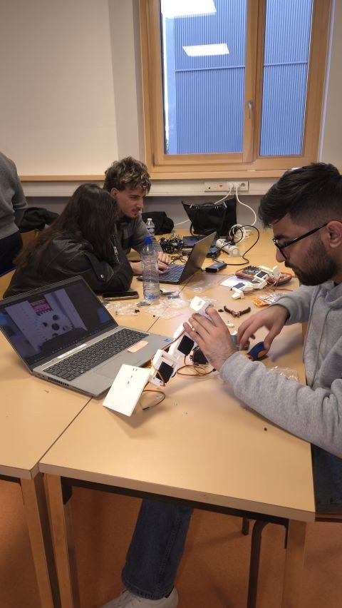

SCARA Manipulator on ESP32: Kinematics, Frames & Pick-and-Place
Erasmus+ BIP International team of 3 Jan 2026 · Besançon
During the on-site week of the Erasmus+ BIP on Control, Perception and Embedded Programming for Robotics, our team built and programmed a SCARA-type manipulator in two intensive days to compete in graded robot challenges. The arm is built from 3D-printed parts and MG996R servos, and is controlled by an ESP32 driving a PCA9685 16-channel PWM servo driver over I²C.
The software turns Cartesian targets into servo pulse widths using a planar inverse-kinematics solver that checks whether each target is reachable. It supports a palletizing mode in which object positions are given in a rotated pallet frame and mapped to the robot base frame. A structured motion sequence coordinates the base, shoulder, vertical (Z) axis and gripper.
My role: I wrote the embedded software and implemented the kinematics: the IK solver, the frame transformations, the servo control layer and the pick-and-place sequence.

1) The Challenges
- Challenge 1: pick-and-place. Move an object between two known coordinates in the robot's base frame.
- Challenge 2: palletizing. Object positions are given in a local pallet frame (position and yaw), revealed shortly before the run, and must be transformed into the base frame.
- Challenge 3: exploration (optional). Scan the workspace with a VL53L0X time-of-flight sensor to find the object, then pick it. This routine is in the codebase as an extension.
2) Hardware & Wiring

| Signal / Module | Configuration |
|---|---|
| ESP32-WROOM-32 I²C | SDA → GPIO21, SCL → GPIO22, 100 kHz (stable for both the servo driver and the ToF sensor) |
| PCA9685 | I²C address 0x40, 50 Hz servo PWM |
| Servo channels | Base: CH0 · Shoulder: CH1 · Prismatic Z: CH2 · Gripper: CH3 |
| VL53L0X (optional) | I²C address 0x29, used for the Challenge 3 scan |
| Power | External 5 V / 2 A servo rail with a common ground to the ESP32 and PCA9685, which prevents I²C instability |
3) Software Architecture
The MicroPython program is organised in four layers:
- Hardware drivers: I²C bus, PCA9685 and VL53L0X.
- Servo abstraction: joint angles are mapped linearly to pulse widths (500 µs → −90°, 1500 µs → 0°, 2500 µs → +90°) and clamped to safe limits. At startup the program reads the PCA9685 output registers back to estimate the current pose, so the first move is consistent.
- Kinematics & frames: inverse kinematics with a reachability check, and a 2D rigid transform for the pallet frame.
- Task sequences: pick-and-place, palletizing and the optional scan-and-pick routine, each selected with a mode switch.
4) Inverse Kinematics
The arm is modelled as a planar two-link manipulator with link lengths L1 = 8.5 cm, L2 = 12.5 cm and a base offset a1 = 4.0 cm. For a target (x, y):
The elbow sign depends on which half-plane the target is in, and the base angle uses the same sign logic as our CoppeliaSim simulation. Joint direction signs and zero offsets match the physical servo orientation. Unreachable targets raise an error, and any angle outside the ±90° servo range is reported before it would be clamped.
5) Palletizing with Coordinate Frames
For Challenge 2, each pick or place location is a pallet pose (Fx, Fy, θ) plus a point in that pallet's local frame:
A sign parameter handles both clockwise-positive and counter-clockwise-positive angle conventions.
To handle the short notice before each run, the pallet is divided into four sections with fixed local centres: (2, −2), (6, −2), (2, −6) and (6, −6) cm. The operator only needs to enter a pallet pose and a section ID to update the pick and place targets.
6) Motion Sequence
Every task runs the same deterministic sequence of poses, with settling delays chosen for robustness and repeatability:
Home → Open gripper → Pick lift-off → Down → Close gripper → Lift → Place lift-off → Down → Open gripper → Lift & home
7) Verification & Limitations
Verification
- Electrical: the PCA9685 was detected at 0x40 on the I²C bus, the 50 Hz PWM was stable, and the common ground and external supply were checked.
- Kinematics: the program printed the joint angles and pulse widths for every target, with warnings for out-of-range angles.
- Frames: a debug printout confirmed that each pallet section and frame pose mapped to the correct base-frame target.
- Behaviour: the full approach → grasp → lift → transfer → release → return sequence ran from the home pose.
Limitations & next steps
- Motion is open-loop with fixed delays, so accuracy depends on servo repeatability, backlash and calibration.
- The linear angle-to-pulse mapping assumes the servos are linear across their full range. Per-servo calibration would improve absolute accuracy.
- High-load moves can make the supply voltage dip. A stronger 5 V source or extra capacitance on the servo rail would help.
- Next: smoother trajectory generation and finishing the ToF-based workspace exploration.
